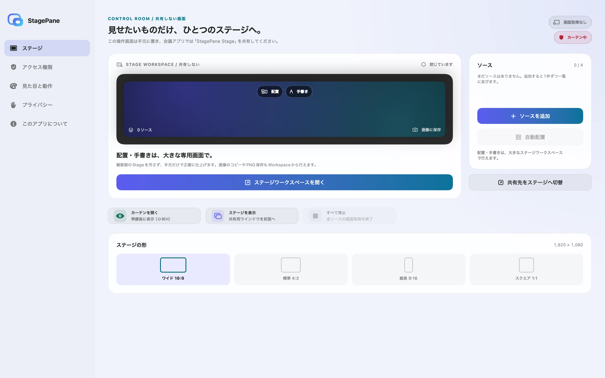
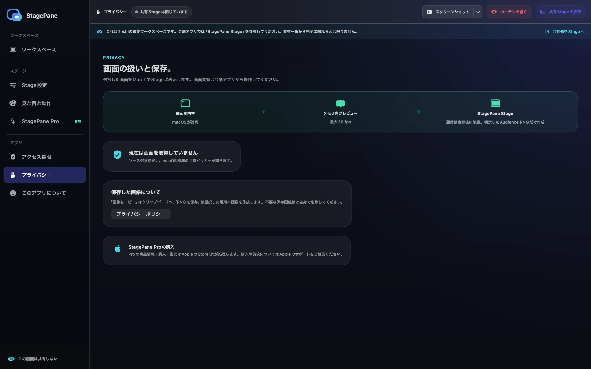
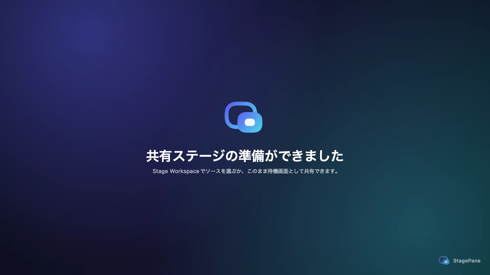
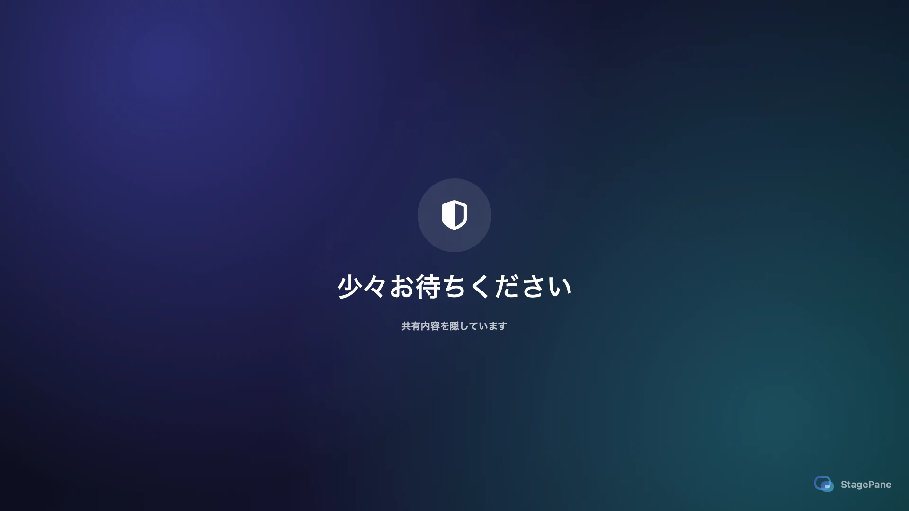

共有用と操作用を、明確に分離
共有Stageには観客向け内容だけを表示し、編集UIは載せません。配置・手書きは大きなWorkspace、ソースと設定はControl Roomで行います。「共有しない」は技術的な取得防止境界ではないため、会議アプリでは正確なStageウインドウを選び、アプリ全体やディスプレイ全体は共有しません。
Open source for macOS
StagePaneは、画面共有で選べる専用ウインドウを作ります。
操作画面はあなたのMacに残し、相手には整えたStageだけを。
A clean stage for everything you share.
相手に見せる、整えられた専用ウインドウ
大きなライブ編集画面と、独立したソース一覧・設定画面
Built for calm sharing
共有する内容と操作する場所を分け、プレゼン中の迷いや誤操作を少なくします。
共有Stageには観客向け内容だけを表示し、編集UIは載せません。配置・手書きは大きなWorkspace、ソースと設定はControl Roomで行います。「共有しない」は技術的な取得防止境界ではないため、会議アプリでは正確なStageウインドウを選び、アプリ全体やディスプレイ全体は共有しません。
⇧⌘H でStageを前面へ移動せずにすぐ覆えます。メッセージは80文字まで。カーテン自体では取得は止まらないため、完全に止めるときは「すべて停止」を使います。
Appleのシステムピッカーで1件ずつ追加し、Control Roomで一時停止・再開・選び直し・確認付き解除を行い、大きなWorkspaceで配置・手書きできます。各選択はその共有対象と取得セッションだけを許可し、別途広範な画面収録許可は求めません。Mac App Store版は「配置」と「手書き」を備え、「操作」やアクセシビリティ項目は含みません。macOS 15.2以降の非サンドボックスのローカル開発ビルドだけが、常設の「アクセス権限」で「設定を続ける」を明示的に選んだ後、選択した単一ウインドウ内の押下対応コントロールを実行できる限定的な「操作」を追加できます。直接配布版は現在提供していません。
観客側Stageを16:9（1920×1080）、4:3（1440×1080）、9:16（1080×1920）、1:1（1080×1080）のPNGとして明示的にコピーまたは保存できます。現在のカーテン、手書き、ロゴ、ポインターを含み、Workspaceの編集UIは含みません。
Aurora、Midnight、Paper、Studioのテーマに加え、通常・レーザーポインター・非表示を選べます。ポインターは色・サイズ・発光を調整でき、最前面ソースだけに表示します。半透明のStagePaneロゴは待機画面、共有内容、カーテンの右下に初期表示され、設定で無効にできます。
録画、外部送信、アカウント、広告、解析SDKはありません。フレームは自動保存せず、明示的な「画像をコピー」「PNGを保存」だけが、きれいなStage画像をローカルへ1枚出力します。
プライバシー設計へ →Real interface
以下はStagePane自身が合成データだけで描画した画面です。WorkspaceとControl Roomを手元に置き、会議アプリでは正確なStageウインドウだけを共有します。




How it works
仮想ディスプレイや別のデスクトップは作りません。会議アプリから普通のウインドウとして選びます。
きれいな共有Stage、大きなWorkspace、Control Roomには別々の役割があります。Control Roomにはライブ編集画面を置きません。
「ソースを追加」でウインドウ・アプリ・画面から1件を、その取得セッション用に許可します。別途広範な画面収録許可は不要で、必要に応じて最大4件まで繰り返せます。
手元のWorkspaceで移動・サイズ変更・手書きを行い、会議アプリでは正確な「StagePane Stage」ウインドウを選んでカーテンを開きます。
「すべて停止」で全ストリームを終了し、保持中のフレームを破棄します。カーテンだけでは取得は止まりません。
Privacy by design
StagePaneは選んだ内容をメモリ上で表示し、自動保存せず破棄します。明示的な「画像をコピー」「PNGを保存」だけが、きれいなStage画像をローカルへ1枚出力します。実際の配信は会議アプリ側が行います。
Security
脆弱性の疑いは公開Issueへ投稿せず、件名に「StagePane Security」と記載して support@hinoshiba.com へ送信してください。1.0未満では、最新の公開リリースをセキュリティ対応の対象とします。
Support
一般的な使い方や再現可能な不具合はGitHub Issuesで受け付けます。非公開の連絡やその他のお問い合わせは support@hinoshiba.com へお送りください。
GitHub Issueを作成Control Room、Stage Workspace、共有Stageはメニューバーから再表示できます。⇧⌘H はカーテン、⇧⌘P は「ソースを追加」です。
「すべて停止」で状態をリセットし、ソースを追加し直してください。Stageを閉じた場合も取得は停止します。
macOS・StagePaneのバージョン、合成データで再現する手順、期待した結果と実際の結果を共有してください。
実際の画面フレーム、私的なウインドウ名、会議URL、トークン、TCCデータベース、未編集の診断情報は投稿しないでください。
Build from source
macOS 14以降とXcode 16以降を用意し、リポジトリをcloneしてください。Apple SiliconとIntelの両方を対象にしています。
現在公開しているのはソースコードのみです。 ./build.sh の成果物は開発用のad-hoc署名・未公証ビルドで、公式バイナリや配布用成果物ではありません。
$ git clone https://github.com/
hinoshiba/StagePane.git
$ cd StagePane
$ ./build.sh
$ open dist/StagePane.appライセンス: ソースコードとロゴ・アイコンの著作物はApache License 2.0です。StagePaneの名称やロゴを、公式性や提携を示す商標として使う権利は付与されません。